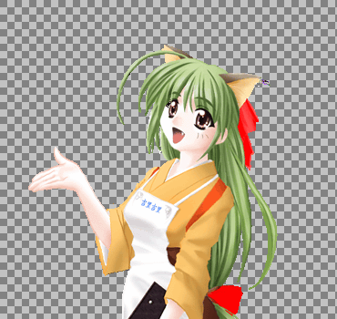

各种图片格式的特点
吉里吉里/KAG 支持各种各样的图片格式，这些格式各有特色。
BMP 图片
吉里吉里支持无压缩的 BMP 图片格式。吉里吉里中使用的 BMP 不能使用 RLE 圧縮、游戏打包时的压缩也无法很有效的减小容量、但虽然容量很大、BMP 格式图片的读取速度却是最快的。
JPEG 图片
JPEG 、(一般情况下) 是使用了不可逆图片压缩技术的格式。因此、图片一旦转为JPG格式，就无法100%还员原来图片的效果。具体来说就是精细度降低、画像轮廓周围会出现杂点。但是，圧缩率很高。风景照片等等的情况，就算出现杂点也看不出来，因此jpg作为背景图片或者全屏图片的话是很好用的。前景图片的话就不太行了。 ( 假如是遮罩图片（mask），存成jpg的话请转成灰度模式 )。
Portable Network Graphic 图片
(
PNG 图片
)
JPEG 不同、PNG图片使用的是可逆压缩急速。虽然同样一张 bmp，转成PNG会比JPG要大、但画质不会降低。很合适用于CG。PNG 图片可以自带透明色（Alpha channel）信息。
此外、画面切换 所使用的规则图片（rule）， 也很合适用 PNG 格式。
Entis Rasterized Image format 画像
(
ERI 画像
)
主要用于全彩色图片、可逆压缩、但相比 PNG 压缩率更高 ( PNG 的 30%-50% 大小 ) 、同时读取速度相对压缩率来说也不错。图片可以自带透明色（Alpha channel）信息。
TLG5 图片
TLG5 图片的扩展名为 .tlg ( 而不是 .tlg5 )。有时候也直接就被叫做 TLG 图片。
同样对应全彩色图片。可逆压缩。图片可以自带透明色（Alpha channel）信息。
压缩率不高、一般会比 PNG 大30%、但读取速度相当快。是 PNG 的４-５倍。
TLG6 画像
TLG6 图片的扩展名和 TLG5 一样是 .tlg ( 而不是 .tlg6 )。吉里吉里２ Version 2.21 beta 3 之后开始支持的图片格式、压缩率很高、读取速度也很快。大小比 PNG 要小 10%-40%、读取速度则是 PNG 的２倍以上。虽然无法像 PNG 一样自带灰阶和调色板（大概说的是索引色之类的）、但支持全彩色、带有透明通道，适合当作角色图片，代替 PNG 使用。
对应全彩色图片。可逆压缩。图片可以自带透明色（Alpha channel）信息。
各图片格式的比较
读取速度
各格式读取速度的比较。
(快) BMP > TLG5 > JPEG > TLG6 > ERI > PNG (慢)
此外， BMP 通常在 Releaser 工具里被分入「压缩」类，这种压缩会使 BMP 读取速度降低到和 ERI 差不多。假如重视读取速度，游戏打包时请在 Releaser 内将 BMP 格式设定为「不压缩」。
只是不压缩的话， BMP 容量很大。最近的 PC 硬件来说是没什么问题，但是从早期的 HDD 或者 CD-ROM 读取的话，图片越小，读取速度才能越快。
文件大小
各类型文件大小比较如下 ( 当然，根据压缩率设定，图片质量也会有变化 )。
(大) BMP > TLG5 > PNG > ERI > TLG6 > JPEG (小)
画质
画质除了 JPEG 为不可逆压缩会劣化外，其他都是无损压缩。如下。
(好) BMP = PNG = ERI = TLG5 = TLG6 > JPEG (差)
根据用途分类建议
背景图片
不在意游戏容量的话， BMP 读取速度最快，并且画质也不会损失。
此外 TLG5 速度不错、不是很在乎游戏容量、也不想损失画面质量、但是又不希望游戏完全不经过压缩、这种情况下使用 TLG5 是很合适的。
希望游戏容量能再小一些、依然不想损失画面质量的话，可以选用 TLG6、ERI 或者 PNG 。
希望极大地减小游戏容量、能够容忍画面质量降低的话， JPEG 就可以了。
前景图片(角色图片之类的)
使用原则和背景图片基本相同。
但是 JPEG 本体并不带有透明通道信息、使用的话，就必须做成主图象/遮罩图像分离的两张 JPEG 。
动画演示中使用的图片
对需要动态画面的部分，例如说动画演示、读取速度最快的 BMP 是很好的选择( 但是请注意，就像上文说明过的一样，文件读取时间和文件容量也有关系 )。
但是 BMP 很占空间、所以使用 TLG5 压缩比较好。利用了 TLG5 读取速度快的特性。
假如不在乎画面质量、JPEG 也不错。JPEG 的读取速度相当快、读取时间大概只有 ERI 或 PNG 的一半。此外、动态画面时，画面质量的降低也不容易看出来。
透明通道的作用
吉里吉里支持带有alpha channel(透明度信息)的图片作为前景图片。假如使用“指定透明色”方式来显示前景，就只能表现出“完全透明”、“完全不透明”两种状态。
但使用alpha channel的话，透明部分和不透明部分的过渡可以和背景融合得很好、也就是说可以做出半透明的效果。

指定透明色方式和透明通道方式显示的图片
左边为指定透明色方式、右边为透明通道方式。
试着放大透明和不透明部分的边界应该就能看出来。此外，右边图片中的丝带也表现了半透明的效果。
图片格式转换
使用吉里吉里 SDK 付属的图片格式转换工具 ( krkrtpc.exe ) 、可以简单地转换图片格式。甚至可以输入 Photoshop 格式文件 (PSD) 。这样的话、就可以简单地将 Photoshop 格式转换成吉里吉里用的前景图片。此外，要将图片转换成吉里吉里独有的压缩格式 TLG5/TLG6 、也可以使用这个工具。
详细的说明、请查看吉里吉里 SDK 的帮助文件。
Note
現在的版本还无法支持输入/输出 ERI 格式。